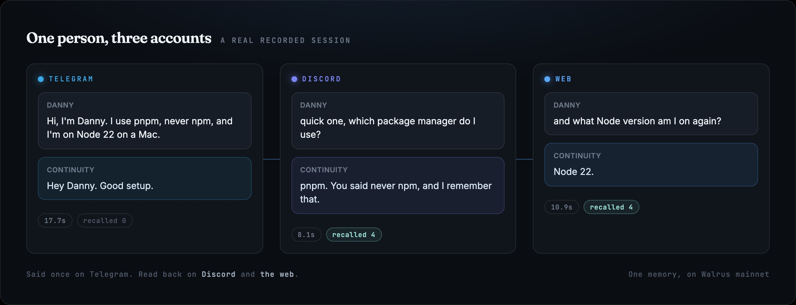

Select everything below this box (click once in the text, then ⌘A), copy, and paste into the editor. Do not use paste-as-plain-text — the formatting is the point.
One memory on Walrus mainnet, read and written by a web chat, a Telegram bot and a Discord bot. What it does, why the storage had to be Walrus, and why narrowing it to a single vertical would have made it less interesting rather than more.
Walrus Sessions 8 · Chatbots that remember · Danny · Continuity · Kimi K2.5 · never GPT or Claude · 5 min
Every time I described this project, somebody suggested I narrow it. Make it a support bot. Make it a shopping assistant. Pick a vertical.
I didn't, and the first reason is sitting in the code: Support desk is one of four modes, alongside Tutor, Coding partner and Planner. A customer service bot is not a product here, it is a setting.
A niche bot is the easier build and the weaker proof.
Give a support bot a memory and you have given it a ticket history: a table keyed on a customer id, a thing that has existed since the 1990s. Nothing about it needs decentralised storage, or an append-only log, or a blob id you can audit. You could fake it convincingly in an afternoon with Postgres and nobody could tell from outside. Same with a shopping assistant remembering your size. These are the demos that look like memory and are really just rows.
Memory gets interesting when it holds things that stay true across contexts. That I use pnpm and never npm. That the Result step of STAR is where I fall apart under interview pressure. That I got question four wrong on Tuesday. Those facts belong to no vertical, and they are worth something to the person they describe, which is the test I kept returning to: would you want to own this record? Nobody wants to own a shopping bot's model of them. People do want to own the record of how they work and what they are trying to learn.
https://youtu.be/tU6CjMPRauw
Seventy-six seconds, no cuts inside a shot. A photo sent on Telegram, asked for on Discord, and the blob holding the memory opened on Walruscan. Then a PDF pasted into the web chat, read, filed, and its bytes shown on Walrus. Also on YouTube, and the file itself is on Walrus, because an article about storing files on Walrus ought to store its own.
533 writes on Walrus mainnet · 3 surfaces, one memory · 4 modes, same memory · 6 tools any agent can call
Continuity is reachable from a web chat, Telegram and Discord. Not three bots sharing a database. One memory, on Walrus mainnet, that all three read and write. The demo is deliberately boring, which is the point: say something in one app, ask about it in another:

three apps · three accounts · one person

Not a claim that it works across apps. The three surfaces reporting themselves connected, with the write count underneath.
Reads your documents. Paste a PDF, a set of notes, a log. It reads the contents and writes what the document actually says into memory, so you can find it later by describing it rather than by remembering a filename.
Describes your photos. Send a picture and it writes a description. That description is the searchable half: "me ice skating" matches a sentence about a person on ice, and never matches pixels.
Fetches either one back. Ask for "the lease" or "my pharmacology slides" and it finds the file and sends it. Telegram gets it as a document rather than a photo, because the latter compresses and destroys a PDF.
Quizzes you, and remembers the misses. In Tutor mode, hand it lecture notes and it writes questions from the document's own words, then remembers which ones you got wrong, so Tuesday's stumble comes back on Friday.
Four modes, one memory. Tutor, Coding partner, Planner, Support desk. They change how it answers without changing what it knows. Pick one on Telegram and you have picked it on Discord.
Keeps what you forward. Forward any Telegram message and it stores it with who said it. Type @walrusmemory_bot in any chat to pull up what it knows without leaving the conversation.
Shows its working. A dashboard lists everything it has stored about you, sorted into collections, each fact carrying the blob id that holds it. Open any of them on Walruscan without asking me anything.
Forgets, and says what that means. Tell it something is wrong and it stops reading that fact back. It will also tell you the blob stays on Walrus, because append-only storage cannot be unwritten.
Two reasons, and the second one surprised me.
The first is the one you would expect. A memory worth owning is a memory you can inspect, and every fact carries the blob id that holds it. Not a log line saying a write happened. The address of the thing itself, printed next to the sentence on your own dashboard, openable on Walruscan by anybody you show it to.
“Trust me, it's stored” is a claim. A blob id per sentence is evidence.
The second reason only appeared when I added attachments. Walrus Memory stores text, so a photograph's bytes can never be a memory; a description can, and the description turns out to be the valuable half because it is the part recall can search. So an attachment became two halves: the description to Walrus Memory, the bytes to a volume on the server.
Then a redeploy wiped the volume and I had the problem backwards. The memory had outlived the file it described. The dashboard had to say file no longer on this server next to a perfect description of a document nobody could open.
So the bytes go to Walrus too, and the blob id is written into the memory, beside the filename:
A file the user shared on telegram, 4 Oct 2026 (lease.pdf):
A residential tenancy agreement for 14 Oak Road, twelve
months from 1 November…
[file:d86524ec-….pdf][walrus:nMxaSHx54ESfmruT6HCCOnVl…]one sentence, two pointers: the local copy and the one that outlives it
That single line is the whole design. The pointer to a file comes back from the same read that finds the file, so there is no second database to keep in sync and no index sitting on the very disk whose loss this is meant to survive. The volume became a cache. Delete the local copy and the file still opens, fetched back out of storage.
Everything on Walrus is public. Blob contents and metadata both, discoverable and enumerable by anyone. The Sui documentation says so in a caution box, and it is right to. That is fine for a memory the relayer already encrypts, and it is not fine for the bytes of somebody's lease sitting beside it.
So attachment bytes are sealed before they leave and opened after they come back: AES-256-GCM, a random nonce per blob so identical files do not produce identical ciphertext, an auth tag so tampering fails to open rather than decoding to nonsense. The blob stays public, because that is what Walrus is. What an enumerator finds is ciphertext.
You do not have to take that on faith. Below are two blobs holding the same sentence, written seconds apart, one stored the naive way and one through the app:
The same sentence, to anyone holding the blob id
run it yourself:
$ curl -s https://aggregator.walrus-testnet.walrus.space/v1/blobs/RfDLZ5dWeoJ3M9tLbqmhJcRjZGPmv4PSFYDOaqmtoCA
Continuity proof-of-encryption, written 2026-10-06T14:25:…
If you are reading this sentence off the Walrus aggregator, the seal failed.
$ curl -s https://aggregator.walrus-testnet.walrus.space/v1/blobs/Z5PMU1ExNXSeE6TnJsX4BBCzj9TxeoOsc9KZlSEaLlE | xxd -l 24
00000000: 5741 4c58 3100 0000 b731 8a68 2fad de7b WALX1....1.h/..{
00000010: de7d 2a93 e455 1fd2 .}*..U..One honest split worth stating. Memories go to mainnet because the relayer pays for them. Raw file bytes have no sponsor. Mainnet writes cost WAL and SUI from a funded wallet, and the public mainnet publishers are not open, so those go to testnet, which is open, free and genuinely erasure-coded. The network travels with every blob id and is shown wherever the id is, because "the files are on mainnet" would be a nicer sentence and a false one.
Three surfaces share one memory because I wrote three adapters that all call the same function. That stops working the moment somebody else wants a fourth, so the memory is an MCP server now. Point any client at it and it gets six tools: recall, remember, list_files, find_file, get_file, list_photos. Two transports, stdio for a client that spawns a process and HTTP for one that posts to a URL.
$ curl -s continuity-production-6084.up.railway.app/mcp \
-d '{"jsonrpc":"2.0","id":1,"method":"tools/call","params":
{"name":"remember","arguments":{"user":"alice",
"fact":"They prefer Rust over Go."}}}'
Written. walrus: XPp81H4XPE-CdB0N4GI-DIOVR7F2jnWGzcc4i-XBrUY
$ … {"name":"recall","arguments":{"user":"alice",
"query":"what language do they like"}}
• They prefer Rust over Go.
walrus: XPp81H4XPE-CdB0N4GI-DIOVR7F2jnWGzcc4i-XBrUYlive right now; that blob id opens on mainnet
A write returns a blob id rather than the word "ok", because an agent deserves the same receipt a person does. The identity model already had the bones for this: a person is an id and an account is a (surface, account) pair, so another app is simply a new surface.
Two honest limits. This is the server half: your agent calls into my memory; Continuity cannot yet call into your tools, because that needs a tool-calling loop it does not have. And the ceiling is not the protocol but the budget: roughly 1000 weighted requests an hour and 60 a minute, shared across every surface, with a chat turn costing about eight.
Continuity is live, and the bot is @walrusmemory_bot on Telegram. The model is Kimi K2.5 through OpenRouter, deliberately not GPT or Claude. The ledger is public: the last fifty writes, each one a blob id you can open on Walruscan, and the counters are live rather than screenshotted.
You can tell it to forget something, and it says exactly what that does:
I'll stop using that. The blob itself stays on Walrus — append-only storage means I can't unwrite it, and I'd rather say so.
It would have been easy to label that button "delete" and let you assume the rest. On append-only storage that is a lie, and a memory product that lies about forgetting is worse than one that cannot forget.
Memory you can't audit isn't memory. It's a confident voice telling you it remembers.